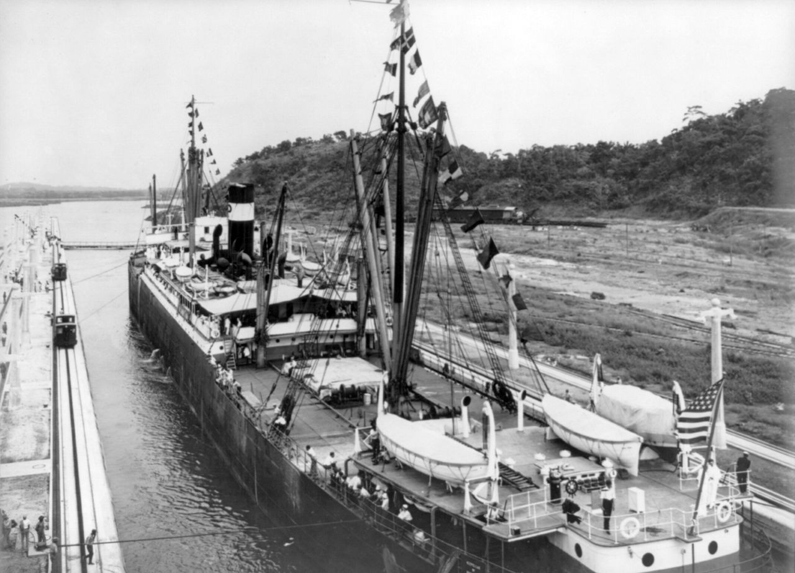

The Panama Canal revolutionized world trade and symbolized both innovation and imperial power. Over a million vessels have crossed since 1914. Control passed from the U.S. to Panama in 1999, marking a shift from dominance to partnership. The canal remains a global artery and one of the modern world’s greatest achievements.
SS Ancon, first ship through the Panama Canal, August 15, 1914 — U.S. Navy Archives